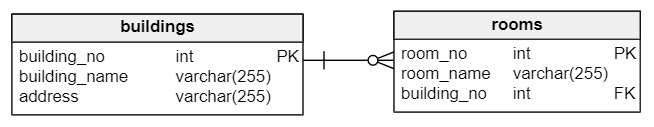

MySQL on delete cascade语句
在本教程中，您将学习如何使用MySQL ON DELETE CASCADE引用操作来执行外键从多个相关表中删除数据。
在上一个教程中，我们学习了如何使用单个DELETE语句从一个或多个相关表中删除数据。但是，MySQL提供了一种更为有效的方法，称为ON DELETE CASCADE对于外键的引用操作，可以实现在从父表中删除数据时自动删除子表中的数据。
MySQL ON DELETE CASCADE示例
下面来看一些使用MySQL ON DELETE CASCADE的例子。
假设有两张表：建筑物(buildings)和房间(rooms)。 在这个数据库模型中，每个建筑物都有一个或多个房间。 然而，每个房间只属于一个建筑物。没有建筑物则房间是不会存在的。
建筑物和房间表之间的关系是一对多(1：N)，如下面的数据库图所示：

当我们从buildings表中删除一行时，还要删除rooms表中引用建筑物表中行的行。 例如，当删除建筑编号(building_no)为2的行记录时，在buildings表上执行如下查询：
DELETE FROM buildings
WHERE
building_no = 2;
我们希望rooms表中涉及到建筑物编号2的行记录也将被删除(讲得通俗一点：假设2号楼倒塌了，那么2号楼的房间应该也就不存在了)。以下是演示MySQL ON DELETE CASCADE参考操作如何工作的步骤。
第一步， 创建buildings表，如下创建语句：
USE testdb;
CREATE TABLE buildings (
building_no INT PRIMARY KEY AUTO_INCREMENT,
building_name VARCHAR(255) NOT NULL,
address VARCHAR(255) NOT NULL
)ENGINE=InnoDB DEFAULT CHARSET=utf8;
第二步， 创建rooms表，如下创建语句：
USE testdb;
CREATE TABLE rooms (
room_no INT PRIMARY KEY AUTO_INCREMENT,
room_name VARCHAR(255) NOT NULL,
building_no INT NOT NULL,
FOREIGN KEY (building_no)
REFERENCES buildings (building_no)
ON DELETE CASCADE
)ENGINE=InnoDB DEFAULT CHARSET=utf8;
请注意，在外键约束定义的末尾添加ON DELETE CASCADE子句。
第三步， 将一些数据插入到buildings表，如下插入语句：
INSERT INTO buildings(building_name,address)
VALUES('ABC Building','PRC'),
('WaterGate','USA');
第四步， 查询buildings表中的数据：
select * from buildings;
现在可以看到，在建筑物表中有两行记录。
第五步， 将一些数据插入到rooms表，如下插入语句：
INSERT INTO rooms(room_name,building_no)
VALUES('Amazon',1),
('War Room',1),
('Office of CEO',1),
('Marketing',2),
('Showroom',2);
第六步， 查询rooms表中的数据：
select * from rooms;
从上面行记录中可以看到，building_no=1的建筑有3个房间，以及building_no=2有2个房间。
第七步， 删除编号为2的建筑物：
DELETE FROM buildings WHERE building_no = 2;
第八步， 查询 rooms表中的数据 -
DELETE FROM buildings WHERE building_no = 2;
SELECT * FROM rooms;
+---------+---------------+-------------+
| room_no | room_name | building_no |
+---------+---------------+-------------+
| 1 | Amazon | 1 |
| 2 | War Room | 1 |
| 3 | Office of CEO | 1 |
+---------+---------------+-------------+
3 rows in set
可以看到，表中只剩下引用building_no=1的记录了，引用building_no=2的所有行记录都被自动删除了。
请注意，
ON DELETE CASCADE仅支持使用存储引擎]支持外键(如InnoDB)的表上工作。 某些表类型不支持诸如MyISAM的外键，因此应该在使用MySQLON DELETE CASCADE引用操作的表上选择适当的存储引擎。
查找受MySQL ON DELETE CASCADE操作影响的表的技巧
有时，当要从表中删除数据时，知道哪个表受到MySQL ON DELETE CASCADE参考操作的影响是有用的。 可从information_schema数据库中的referential_constraints表中查询此数据，如下所示：
USE information_schema;
SELECT
table_name
FROM
referential_constraints
WHERE
constraint_schema = 'database_name'
AND referenced_table_name = 'parent_table'
AND delete_rule = 'CASCADE'
例如，要使用示例数据库(testdb，因为上面两个表是建立在testdb数据库之上的)中的CASCADE删除规则查找与建筑表相关联的表，请使用以下查询：
USE information_schema;
SELECT
table_name
FROM
referential_constraints
WHERE
constraint_schema = 'testdb'
AND referenced_table_name = 'buildings'
AND delete_rule = 'CASCADE'
执行上面查询语句，得到以下结果 -
在本教程中，我们一步一步向您展示了如何在从父表中删除数据时，使用MySQL ON DELETE CASCADE引用操作从外键自动从子表中删除相关联的数据。